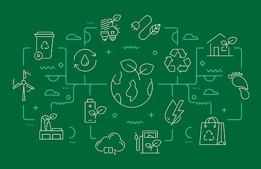

The Benefits of Responsible Consumption and Production :
The Benefits of SDG-12 include:
SDG 12, or Sustainable Development Goal 12, focuses on ensuring sustainable consumption and production
patterns. Here are some of the benefits associated with achieving SDG 12:
1. Environmental Conservation: By promoting sustainable consumption and production practices,
SDG 12 helps reduce the environmental impact of human activities. This includes lowering greenhouse gas
emissions, minimizing resource depletion, and protecting ecosystems and biodiversity.
2. Resource Efficiency: Adopting sustainable production methods encourages businesses and
industries to use resources more efficiently. This leads to reduced waste generation, increased
recycling and reuse, and optimized use of raw materials, energy, and water.
3. Economic Growth: SDG 12 can stimulate economic growth by fostering innovation in sustainable
technologies and practices. Businesses that embrace sustainability often find cost savings through
efficiency improvements, access to new markets, and enhanced brand reputation, leading to long-term
profitability and competitiveness.
4. Social Equity: Sustainable consumption and production aim to ensure that the benefits of
economic development are equitably distributed among all members of society, including marginalized
communities and future generations. This can help reduce poverty, improve livelihoods, and promote
social inclusion.
5. Health and Well-being: Sustainable consumption habits, such as choosing healthier and locally
sourced foods, can have positive impacts on public health. Additionally, reducing exposure to harmful
chemicals and pollutants through sustainable production practices can improve overall well-being.
6. Climate Change Mitigation: By reducing emissions and promoting renewable energy sources,
SDG 12 contributes to global efforts to mitigate climate change. Transitioning to cleaner production
methods and energy sources helps limit temperature rise and its associated impacts, such as extreme
weather events and sea-level rise.
7. Resilience to Shocks: Sustainable consumption and production systems tend to be more resilient
to external shocks, such as resource scarcity, price volatility, and environmental disasters.
By diversifying supply chains, reducing dependence on finite resources, and investing in renewable
energy, communities and economies can better withstand disruptions.
8. Global Partnerships: Achieving SDG 12 requires collaboration among governments, businesses
, civil society, and other stakeholders at local, national, and international levels. Building
partnerships and sharing best practices enhance collective efforts towards sustainability, fostering
a more interconnected and cooperative global community.
Overall, SDG 12 offers a holistic framework for addressing interconnected challenges related to
consumption, production, and environmental sustainability, with benefits spanning economic, social,
and environmental dimensions.🌍

-Back to Home